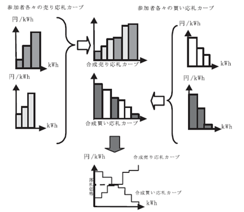

https://edison-dev-1c1b5.web.app/
下記のページにアクセスし、アカウントを作成します。Name は他の人からわかりやすい名前を入れてください。E-mail はメール認証があるため、メールを確認することができる有効なメールアドレスを入力する必要があります。次に 8 文字以上の Password を設定してください。
https://edison-dev-1c1b5.web.app/accounts/create
メールアドレスとパスワードがログインする際に必要なものになります。
次回以降は以下のページよりログインができます。
https://edison-dev-1c1b5.web.app/accounts/enter
ログアウトはページ上部の EDISON のバーの右端のボタンでログアウトできます。
アカウントを作成すると、Account Detail のページに遷移します。しばらく待っていると、Display Name や、XRP Address などの情報が表示されます。
アカウント詳細ページの Room ID をクリックすると、部屋番号の設定に移ります。本来であればここで自分の所属する寮と部屋番号を設定していただきますが、今回のテストでは以下の部屋番号のうち、自分の使用量が設定されている部屋を選択してください。
部屋番号を入力し、Submit を押し、暫く待つと Currently Registered Room のところに higashi10X と表示されるので、これで部屋番号の設定は完了です。
アカウント作成の際に入力したメールアドレスに認証メールが送られているので、メール内リンクをクリックして認証してください。この作業のあと、EDISON を開いているページを再読み込みすると Account Verified の項が Verified になります。
この状態にすることで、EDISON の各種機能が利用可能になります。
EDISON には以下の機能があります。各種機能にはページ上部 EDISON バーの左端のハンバーガーアイコンよりアクセス可能です。
以下、各種機能について簡単な説明です。
KyotoUniv-SIC EDION のランディングページです。EDISON の説明の他、このアプリで取引を行うトークンである UPX・SPX の説明などを記載しています。
EDISON の各種情報が確認可能なダッシュボードです。ここでは以下の情報が確認可能です。
自分が所有しているアカウントの残高です。UPX は電力会社の電気を 1kWh 使用する権利のトークン、SPX はソーラーの電気を 1kWh 使用する権利のトークンです。毎日、10 時ごろに前日使用した電気の量と同量のトークンが SPX を優先して消費されます。
もし、残高がこの消費よりも少ない場合には、UPX・SPX の残高がマイナスになるのではなく、Insufficient Balance として足りなかったトークン数が記録されます。 これは月末の精算 (テストでは 26 日)の精算の際に使用され、これを上回る量のトークンを保有していた場合、相殺して当月の電気料金が計算されます。
最新のシングルプライスオークションの約定価格と約定取引量が表示されます。 Market Date は基本的に前日となりますが、もし約定した取引がなかった場合、過去に遡って最新の約定価格と約定取引量が表示されています。
自身の当月の合計電気使用量と学生寮全体の平均使用量が表示されています。平均は学生寮 74 部屋すべての平均値です。（テストではこれにダミーの部屋 3 部屋も含まれています。）
前年と今年の月間電気使用量がグラフで表示されます。テストでは 2 月のところにすでに 15kWh が表示されています。これをベースに今回のテストでの各々の電気使用量を設定しています。
EDISON の今回のテストではアカウント作成時に 15UPX トークンが 27 円/UPX で付与されます。 これは前月と同じ電気使用量のユーザーによっては十分なトークンですが、前月の 2 倍、3 倍使用するユーザーにとっては足りない量です。そのため、取引を行いトークンを取得する必要があります。 もし、トークンが余った状態やトークンが不足する状態で精算を迎えた場合はそれぞれ割り引かれて計算されます。詳細については添付資料を御覧ください。
オークションについてはブラインド入札のシングルプライスオークションとなっています。詳細については省きますが、大まかには以下のとおりです。
これら二つの曲線の交点で落札価格と落札量が決まります。交点より左側にある応札（落札価格より安値の売りと落札価格より高値の買い）はすべて成約し、交点より右側の考察は全て成約されません。

買い注文（Bid）は 24 時間作成できますが、電気使用量の引き落としの都合から、現状、売り注文（Ask）を 0 時から 11 時の間は作成することはできません。 シングルプライスオークションは毎日 0 時に実施され、約定価格と約定取引量が決定され、それぞれの取引が実行されます。
当日に作成した買い注文と売り注文が表示されます。クリックすることで詳細ページに飛び、削除が可能です。
翌日 0 時のシングルプライスオークションにはここに表示されている Bid, Ask が対象になります。
Bid, Ask がどのように処理されたかの履歴です。成約した場合は Accepted、成約しなかった場合は Rejected と表示されます。Contract Price（成約価格）も表示されますが、オークションの特性上、同じ価格でも成約しない取引が発生します。
月初のトークン付与、アカウント作成時のトークン付与は Bid の履歴として表示されます。詳細には Primary Transaction と表示されます。
トークンのシングルプライスオークションに関する買い注文（Bid）と売り注文（Ask）を作成することができます。 一番下のカードにトークンの種類と 1 トークンあたりの価格、トークン量を指定し、Request ボタンをクリックすることで作成できます。
前述のように現在の仕様では 0 時-11 時間売り注文を作成することができないのでご注意ください。 参加者のほか、管理者が毎日 SPX トークンの売り注文を発行します。（テストでは毎日 4SPX、初日は 27.5 円で一日ごとに 0.1 円増加）UPX トークンは EDISON 全体で不足する際に不足する量のみ売り注文が発行されます。
EDISON には簡単なチャット機能が実装されています。ユーザーとタイトルを設定し、チャットを開始します。同じユーザーに対し、複数のチャットを作成することも可能です。
大まかにはアカウント作成の項で説明したとおりです。Monthly Payment の項には EDISON が精算した前月までの電気料金が表示されます。
Account Detail > XRP Address で Ripple のブロックチェーンである XRP Ledger の情報を取得できます。現在は、XRP Ledger のテストネットに接続されます。 ここでは XRP Ledger に記録されている UPX, SPX の残高と暗号通貨 XRP の残高を確認できます。 XRP はアカウント作成の際に 1000XRP 付与されています。この XRP はトランザクションを Ripple のブロックチェーンに記録する手数料としてごく少量が消費されます。 現在テスト中の機能であり、まれに EDISON の残高と一致しないことがあります。